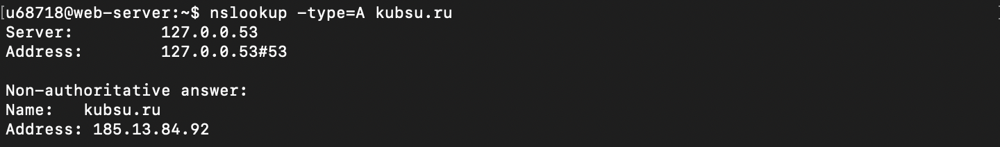

Документация подключения к серверу
1. Подключение по SSH к серверу kubsu-dev.ru
ssh u68718@kubsu-dev.ru -p 58528
2. Проверка доступности kubsu.ru с помощью ping
ping kubsu.ru
3. Запрос MX-записей для kubsu.ru
nslookup -type=MX kubsu.ru
4. Запрос A-записи для kubsu.ru
nslookup -type=A kubsu.ru

5. Попытка запроса WX-записей для kubsu-dev.ru
nslookup -type=WX kubsu-dev.ru
6. Запрос A-записи для kubsu-dev.ru
nslookup -type=A kubsu-dev.ru
7. WHOIS информация для kubsu.ru
whois kubsu.ru
8. WHOIS информация для kubsu-dev.ru
whois kubsu-dev.ru
9. Генерация SSH-ключей на сервере
ssh-keygen
10. Клонирование репозитория на сервер
u6871B@web-server:~$ cd www
u6871B@web-server:~/www$ git clone https://github.com/AlexanderBragin/web-1
Выполнены команды:
- Переход в директорию
www
- Клонирование репозитория
web-1 с GitHub